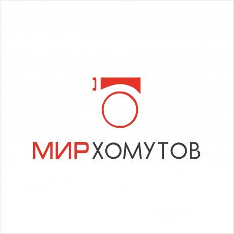

Материал компании

MITEX 2026 · Россия · Стенд 8C902
МИР ХОМУТОВ, ООО
Карточка проверена 10 ноября 2026, 09:25 · Источник ↗ · Снимок оригинальной карточки ↗
О компании
Высокий уровень качества продукции "Мир Хомутов" подтверждает сертификация Компании на соответствие международным стандартам СМК требованиям ISO 9001:2015. "Мир Хомутов" победитель в Премиях “Бренд года в России” в номинации “Крепежные изделия” и Аквафлейм в номинации “Предприятие года”. Клиентами компании являются более 45000 компаний в России и СНГ - производственные предприятия, строительные и монтажные организации, предприятия ЖКХ, торговые сети и магазины – сантехнические, строительные, автозапчастей и др. “Мир Хомутов” производит широкий ассортимент качественных хомутов под брендом “МХ”. Разрабатывает чертежи и производит хомуты по индивидуальным заказам, а также под СТМ (собственной торговой маркой) Заказчиков. Компания имеет собственную испытательную лабораторию. Производственные площади составляют 3800 кв.м. Вся продукция сертифицирована, соответствует ГОСТам и стандартам DIN. В ассортименте "Мир Хомутов" 10000 видов хомутов, других крепежей и сопутствующих изделий: нейлоновые стяжки, силовые хомуты, трубные хомуты, ремонтные и червячные хомуты, вентиляционные хомуты и комплектующие, монтажная лента, быстроразъемные соединения, монтажные системы, рукава и шланги и другие крепежи и метизы. Площадь собственных складов в Москве 5000 кв.м., поэтому всегда в наличии на складе весь ассортимент, что позволяет за 1-2 дня формировать и отправлять комплексные заказы клиентам по России и СНГ. Компания "Мир Хомутов" активно развивает направление “цифровых” хомутов и уже разработала библиотеку BIM-моделей трубных хомутов, которые каждый может получить бесплатно, оставив заявку на сайте https://www.homut.ru/bim_models/ . Оптовый каталог продукции https://www.homut.ru/catalog/ Купить в розницу на Озон https://clck.ru/382ubX или ЯндексМаркет https://clck.ru/36RGFs
Контакты
Сайт: http://www.homut.ruE-mail: mx@homut.ruТелефон: +74951270986social: VKhttps://vk.ru/mirhomutovsocial: Rutubehttps://rutube.ru/channel/66229778/
Все контактные сведения из карточки
Контакты Главный офис ООО "Мир Хомутов" Телефон: +74951270986 E-mail: mx@homut.ru Адрес: 125599, Россия, Москва, 125599, г. Москва, ул. Маршала Федоренко, д.3 Веб-сайт: http://www.homut.ru/ E-mail: mx@homut.ru Телефон: +74951270986
Все рубрики участника
Mitex - Рубрикатор
- 4. Инструмент и оборудование для строительно-монтажных, окрасочных и малярных работ
- 12. Крепеж, метизы, скобяные изделия
Зал
- Зал № 8
Участник выставки
- MITEX
- MITEX FASTENERS
Фотографии и изображения
Видео, каталоги и документы
Последние публикации в Telegram
До десяти последних сообщений каждого найденного канала. Оригинал открывается по ссылке.

🔥 2 день выставки MITEX 2026 в Крокус Экспо в самом разгаре! Это масштабная площадка, где встречаются ведущие производители и специалисты рынка инструмента, оборудования и…

🍫 Наши трубные хомуты на шоколадной фабрике «Победа»! 📸 Делимся примерами применения трубных хомутов из нержавеющей стали МХ на производственном предприятии «Победа». В пищевой промышленности…


🔥 В «Крокус Экспо» открылась одна из ведущих международных выставок инструментов и оборудования — MITEX 2026! Это масштабное событие, которое объединяет производителей, поставщиков и профессионалов…


Червячные хомуты в производственном оборудовании! Обеспечивают плотную фиксацию соединений, помогают предотвратить протечки и поддерживать герметичность систем. Где применяются? ✔️ В насосном и компрессорном оборудовании ✔️…

Хомуты и крепёж для производства! 🔩 Сделали подборку востребованных хомутов и крепёжных изделий, которые обеспечивают надёжность соединений и стабильную работу производственного оборудования. В подборке: ✔…
ТОП-3 ХОМУТА ДЛЯ ПРОИЗВОДСТВА! 🔩 1. Червячный хомут — обеспечивает надёжную фиксацию шлангов в производственном оборудовании. 2. Силовой хомут — применяется для крепления трубопроводов, эксплуатируемых…
Приглашаем встретиться на MITEX 2026! С 10 по 13 ноября в Москве состоится 19-я международная выставка инструмента, оборудования и технологий MITEX! 👉 Это одно из…

🇷🇺 С Днём народного единства! Дорогие клиенты и партнёры! Желаем мира, благополучия, стабильности и новых успехов! Пусть взаимное доверие и поддержка помогают достигать общих целей!…
NORMA TOPPO — немецкое качество в наличии на складе! Надёжные червячные хомуты для прочного и герметичного соединения шлангов. В наличии: • W1 — 9 и…

Ассортимент хомутов для бассейнов, аквапарков, СПА и терм! 💧 Надёжное крепление труб, фиксация оборудования, организация коммуникаций и оперативный ремонт — важные задачи при строительстве и…